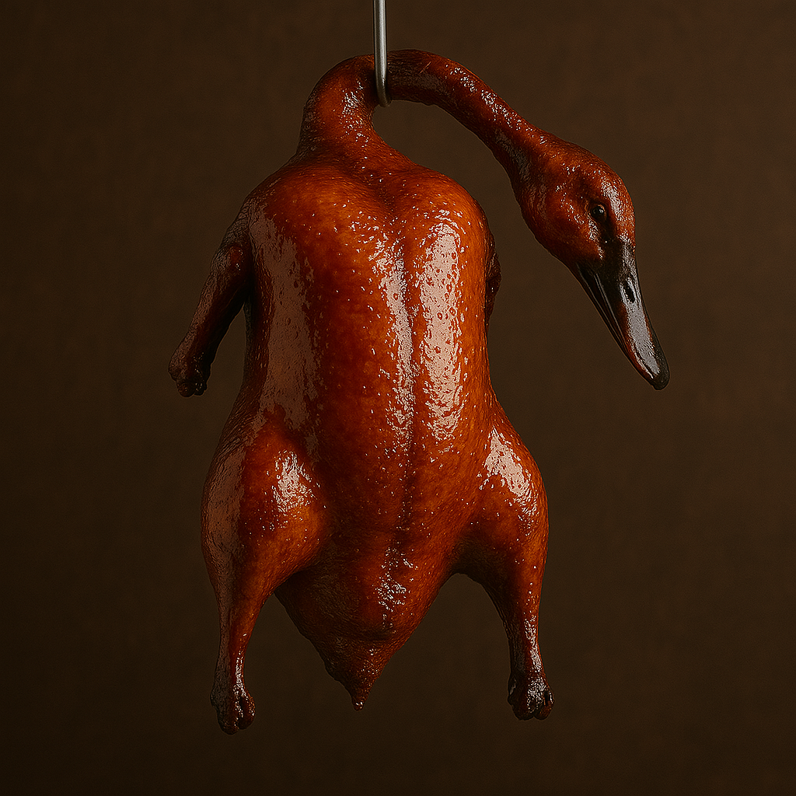
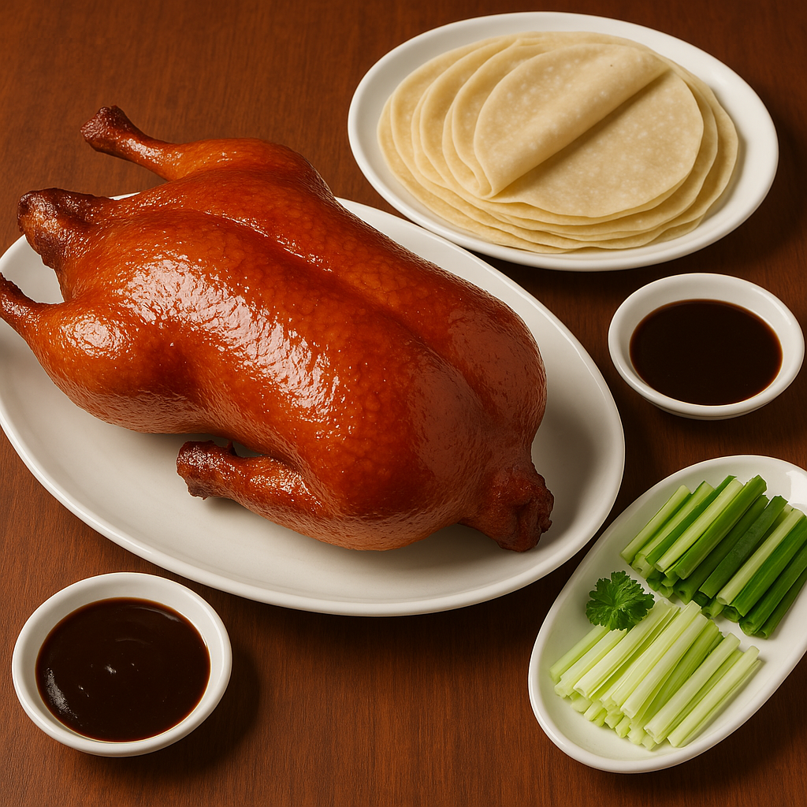
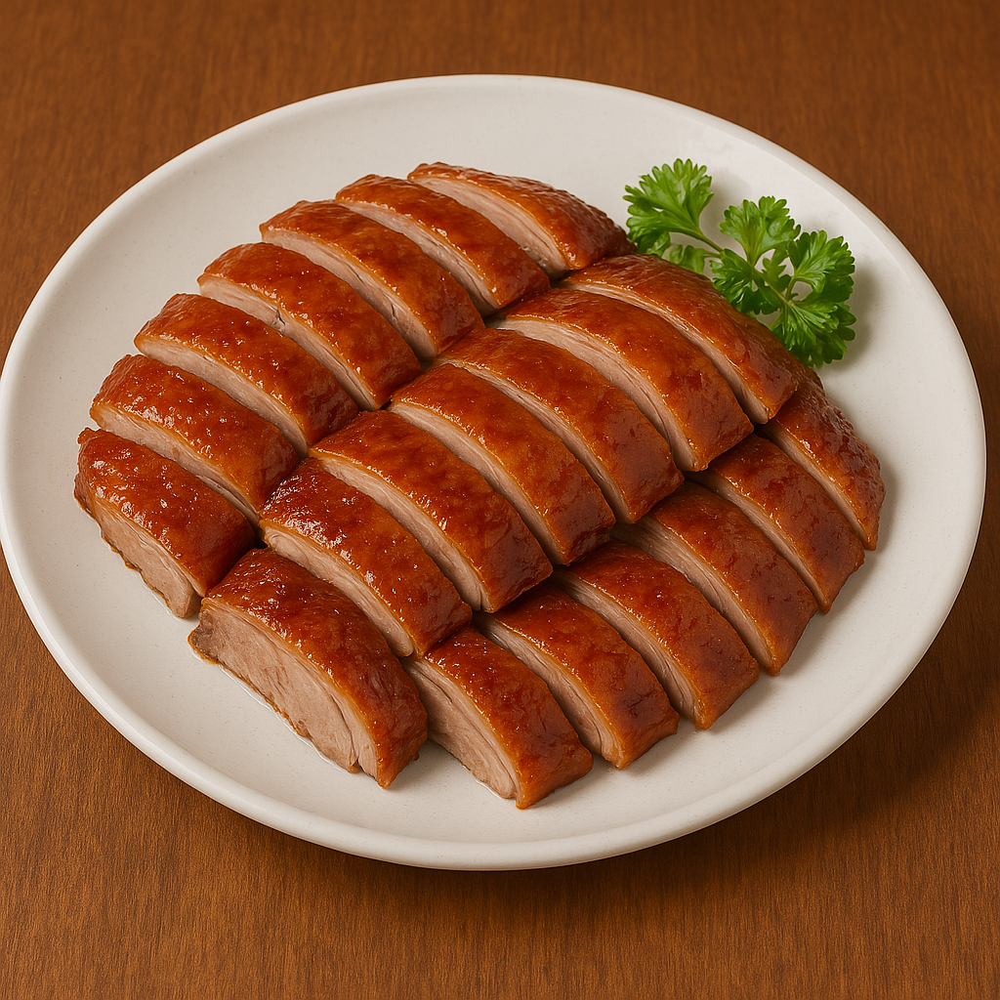

- Pato Pekín -

El Pato Pekín es uno de los platos más emblemáticos de la cocina china. Su preparación requiere paciencia y técnica para lograr la piel crujiente y la carne jugosa.
En nuestro restaurante seguimos una receta tradicional que ha sido perfeccionada a lo largo de los años. El pato se marina con especias aromáticas, se seca cuidadosamente y se asa hasta alcanzar una textura inigualable.
Ingredientes principales
- Pato entero marinado
- Miel y salsa de soja
- Jengibre, anís estrellado y ajo
- Cebollino y panqueques de arroz
Acompáñalo con nuestras salsas caseras y envuélvelo en panqueques finos con pepino y cebollino. ¡Una delicia que tienes que probar!


